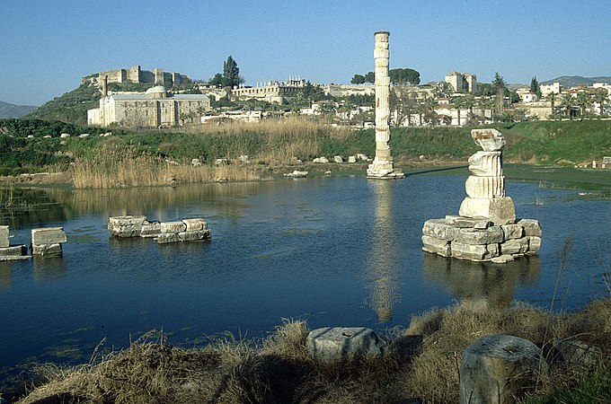

Храм Артемі́ди або Артемісіон (дав.-гр. Ἀρτεμίσιον; тур. Artemis Tapınağı) — перший мармуровий давньогрецький храм, що знаходився в Іонії на егейському узбережжі Малої Азії поруч з античним містом Ефес (поблизу сучасного містечка Сельчук у Туреччині) та був присвячений давній місцевій формі богині Артеміди. Протягом своєї історії храм двічі повністю перебудовувався — в VII ст. до н. е. (після руйнівного потопу) і в IV ст. до н. е. (після підпалу Геростратом). В остаточному вигляді набув слави одного з Семи чудес світу.
Храм сильно постраждав під час навали готів у 262 році й остаточно знищений як місце поганського культу у 401 році константинопольським архієпископом Іваном Золотоустим, під час його візиту до Ефесу. Місце розташування храму було віднайдене у 1869 році експедицією, організованою Британським музеєм. Станом на сьогодні на місці храму знаходяться лише залишки фундаменту та одна колона, символічно складена з різних фрагментів, знайдених під час розкопок.
Теменос (дав.-гр. τέμενος — священне місце, святилище) поруч з Ефесом існував задовго до зведення тут першого Артемісіона. Павсаній був упевнений, що святилище існувало ще задовго до появи в цих місцях іонійців і було навіть старіше за оракульне святилище Аполлона в сусідній Дідімі, споруджене приблизно в VII столітті до н. е. Він вважав, що до прибуття іонійських греків мешканцями цих міст були лелеги та лідійці. У своєму Гімні Артеміді Каллімах приписував створення першого теменосу в Ефесі амазонкам, які, на його думку, поклонялись Артеміди, що була їх богинею-покровителькою. Згідно з Павсанієм, Піндар вважав, що амазонки-засновниці святилища брали участь у облозі Афін. Тацит також вірив в заснування першого храму амазонками, проте сам Павсаній вважав, що святилище навіть передувало часам амазонок.
Сучасна археологія не може підтвердити амазонок Каллімаха, але розповідь Павсанія про давнину цього місця здається цілком обґрунтованою, оскільки є підтвердження, що це місце було заселене ще з часів Бронзової доби.
Перший храм Артеміди, що існував на цьому місці був зруйнований повінню в VII ст. до н. е., внаслідок чого над первинною глиняною підлогою храму утворився шар мулу і піску завтовшки до 0,5 метра.
Будівництво другого храму, що розпочалось біля 550 року до н. е., фінансував лідійський цар Крез (Кросус), засновник Лідійської імперії, до складу якої входило зокрема і місто Ефес. Проект храму розробив і реалізував грецький архітектор Херсіфрон з Кноссу та його син Метаген.
Херсіфрон запропонував будувати храм, оперезаний подвійним рядом колон, але справа ускладнювалась тим, що поруч не було джерел мармуру. Допоміг випадок;
| Пастух Піксодор пас стадо на пагорбах біля Ефеса. |
|---|
| Два барани почали бійку, під час якої один з них з розбігу вдарився об скелю, від якої відлетів білий уламок. Коли пастух зрозумів, що в нього в руках мармур, він поспішив до міста, де зраділі мешканці міста нагородили його дорогими подарунками. |
Другий храм був зведений у вигляді прямокутної будівлі з мармуру та дерева завдовжки 115 метрів (377 футів) та завширшки 46 метрів (151 футів), оперезану з усіх боків подвійною колонадою з висотою колон близько 13 метрів і, вірогідно, був першим в історії грецьким храмом, збудованим з мармуру.
Унікальним був сам спосіб побудови храму. Він був зведений на болотистому ґрунті. Незвичність вибору місця пояснювалася прагненням будівельників уникнути руйнування храму внаслідок частих землетрусів і пожеж. На думку архітектора Херсифрона, м'який болотистий ґрунт слугував амортизатором при землетрусах, а щоб запобігти осіданню величезної кам'яної будівлі, було вирішено заповнити котлован сумішшю деревного вугілля і вовни. Будівлю прикрашали бронзові статуї, створені такими скульпторами, як Фідій, Поліклет, Кресилус і Фрадмон.
Аналіз барельєфів, якими були прикрашені найнижчі барабани храмових колон, показав, що для будівництва другого храму використовувалися колони попередньої версії храму, які мали відповідний декор. Мабуть, про це не знав Пліній Старший, який у своїй «Природничій історії» стверджував, що архітектори нового храму вирішили побудувати його на болотистій місцевості щоб захистити від землетрусів (тоді як насправді храм було зведено на цьому місці, оскільки там розташовувався його попередник).
Храм став важливою визначною пам'яткою, яку відвідували правителі, торговці та мандрівники, багато з яких віддавали шану Артеміді у вигляді підношення дорогоцінностей, прикрас та різноманітних товарів. Храм також пропонував притулок тим, хто тікав від переслідування чи покарання. Ця традиція була пов'язана з міфом про амазонок, які двічі втікали до святилища Артеміди, шукаючи захисту богині спочатку від Діоніса, а згодом — від Геракла.
Після шести років пошуків, місце храму було заново відкрито 31 грудня 1869 року експедицією під проводом Дж. Т. Вуда, яка спонсорувалась Британським музеєм. Внаслідок розкопок, проведених англійськими археологами, у болоті, на передбачуваному місці знаходження святилища, була знайдена опорна плита споруди і численні підношення в храм. Ці розкопки тривали до 1874 р.
Ще кілька фрагментів скульптур було знайдено під час розкопок 1904—1906 рр. під керівництвом Д. Дж. Хогарта. Віднайдені скульптурні фрагменти перебудови IV століття до н. е. та декілька фрагментів попереднього храму були зібрані та виставлені в «Ефеській кімнаті» Британського музею. Крім того, у музеї є можливо найстаріший скарб монет у світі (600 р. до н. е.), які були заховані в горщику в фундаменті першого храму.
Сьогодні місце храму, що лежить недалеко від Сельчука, позначене єдиною колоною, складеної з роз'єднаних фрагментів, виявлених на цьому місці. Знамениті рельєфи колон Артемісіону нині перебувають у Британському музеї в Лондоні.
У середині XX століття були знайдені залишки майстерні Фідія, де збереглися три зменшені копії статуї Артеміди. Вони зберігаються в музеях Туреччини.
|  | |
|---|---|
|